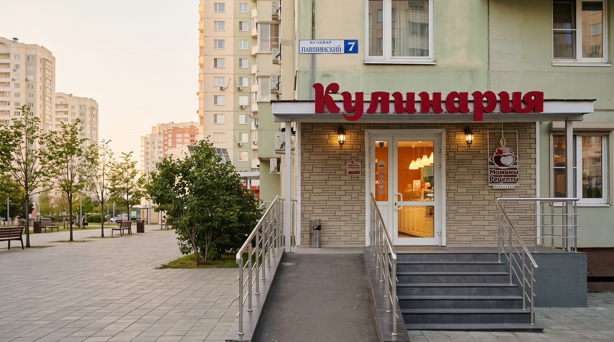
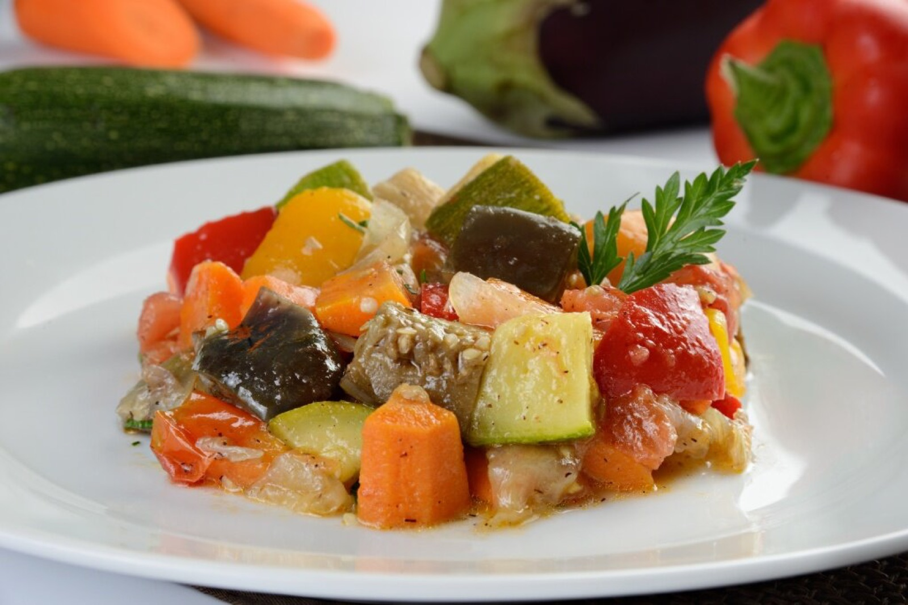
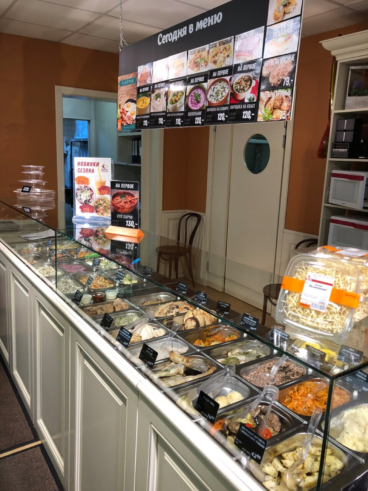
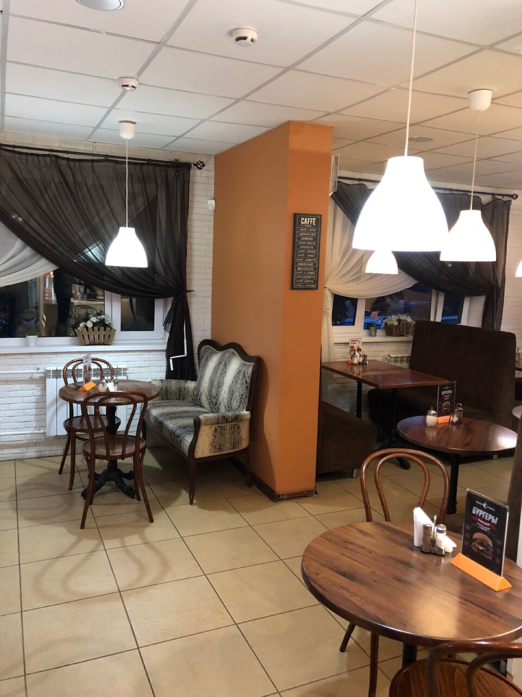
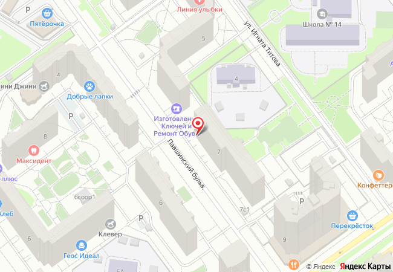

Кулинария и кондитерская · Павшинская пойма
Мамины рецепты
Супы, вторые блюда, салаты, блинчики и выпечка на витрине каждый день с утра до вечера: поесть в зале, забрать домой или заказать доставку.
Позвонить+7 (495) 746-91-91

Ужин на всю семью можно забрать по дороге домой: витрина открыта до 21:30 каждый день.

Как здесь устроено
Небольшой зал при кулинарии на первом этаже жилого дома
Берёте поднос, выбираете на витрине, садитесь на диванчик у окна или на венский стул у круглого столика. Или просите упаковать с собой: многие соседи так и делают, забирая на вечер вторые блюда, салаты и блинчики.
- Форматкулинария, кафе, кондитерская
- Кухнядомашняя, русская, европейская
- С собойеда и кофе
- Доставкаесть
- В залеWi-Fi

Отзывы · Яндекс Карты 4,5 из 5, 532 оценки
Что говорят те, кто ходит сюда обедать
«Ассортимент огромный. Вкусно. Кухней вообще не пахнет, не знаю как им это удается? … Часто вижу, как люди просто пакетами набирают вторые блюда, выпечку, блинчики, салаты и т.п.»
«Очень часто забегаю на ужин и беру с собой на Завтрак сырники и запеканку. Видел что есть каши.»
«Пришли на обед. Брали финскую уху, салатики, котлеты. Большой выбор готовых блюд на любой вкус. Всё очень свежее!»
«…Особенно обалденные блинчики с мясом и печеночный мини - тортик»
«Очень вкусно, по-домашнему уютно, ребенок обожает и еду, и десерты.»
Цитаты сокращены без изменения смысла, эмодзи убраны.
Адрес и часы
Павшинский бульвар, 7, Красногорск
- Адрес
- Павшинский б-р, 7, Красногорск, Московская обл., 143401
- Часы работы
- Ежедневно, 10:00–21:30
- Телефоны
- +7 (495) 746-91-91
+7 (929) 515-20-20 - Как добраться
- Остановка «Павшинский бульвар», 280 м
- ВКонтакте
- vk.ru/maminy_recepty_kulinariya

Позвоните, чтобы узнать, что сегодня на витрине, и спросить про доставку.